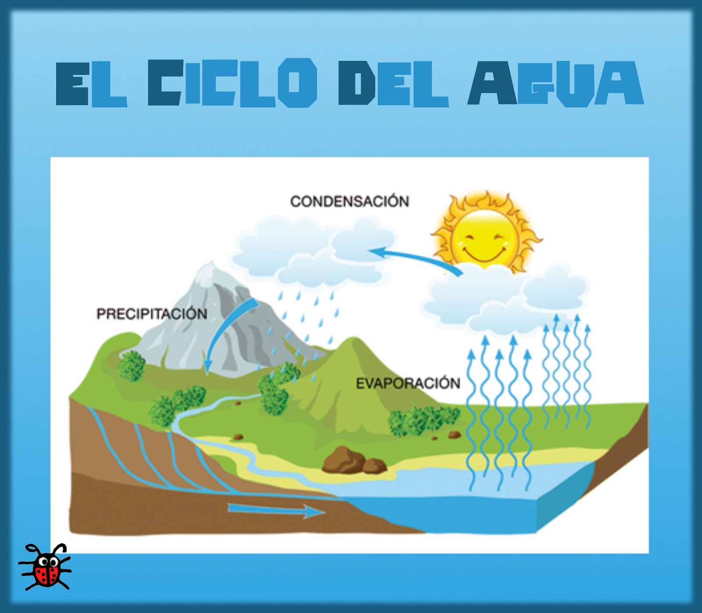
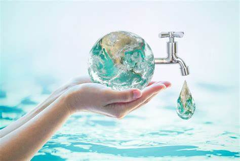
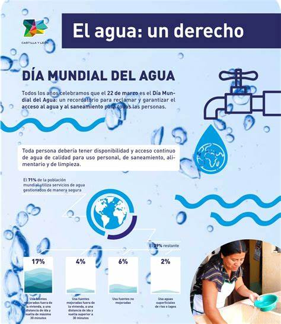

Actividades Sugeridas
Estas actividades están diseñadas para fomentar el aprendizaje y la conciencia sobre la importancia del agua:
- El ciclo del agua: Realiza un experimento casero para demostrar cómo funciona el ciclo del agua.
- Ahorro en casa: Crea una lista de hábitos para ahorrar agua y aplícalos en tu hogar.
- Infografía: Diseña una infografía que explique el impacto de la contaminación en los ríos.
- Observación: Visita un río o lago cercano y documenta los ecosistemas que dependen de él.
Video Didáctico
Galería de Actividades


